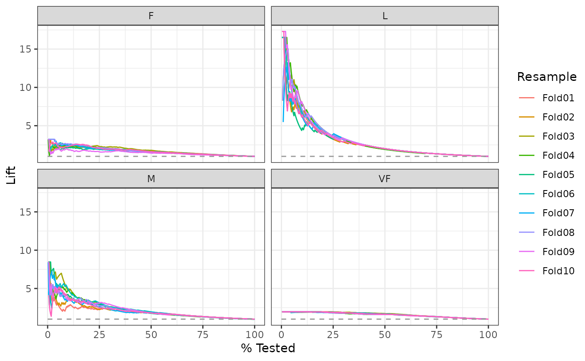

lift_curve() constructs the full lift curve and returns a
tibble. See gain_curve() for a closely related concept.
lift_curve(data, ...) # S3 method for data.frame lift_curve(data, truth, ..., na_rm = TRUE) autoplot.lift_df(object, ...)
| data | A |
|---|---|
| ... | A set of unquoted column names or one or more
|
| truth | The column identifier for the true class results
(that is a |
| na_rm | A |
| object | The |
A tibble with class lift_df or lift_grouped_df having
columns:
.n - The index of the current sample.
.n_events - The index of the current unique sample. Values with repeated
estimate values are given identical indices in this column.
.percent_tested - The cumulative percentage of values tested.
.lift - First calculate the cumulative percentage of true results relative to the
total number of true results. Then divide that by .percent_tested.
There is a ggplot2::autoplot()
method for quickly visualizing the curve. This works for
binary and multiclass output, and also works with grouped data (i.e. from
resamples). See the examples.
The motivation behind cumulative gain and lift charts is as a visual method to determine the effectiveness of a model when compared to the results one might expect without a model. As an example, without a model, if you were to advertise to a random 10% of your customer base, then you might expect to capture 10% of the of the total number of positive responses had you advertised to your entire customer base. Given a model that predicts which customers are more likely to respond, the hope is that you can more accurately target 10% of your customer base and capture >10% of the total number of positive responses.
The calculation to construct lift curves is as follows:
truth and estimate are placed in descending order by the estimate
values (estimate here is a single column supplied in ...).
The cumulative number of samples with true results relative to the entire number of true results are found.
The cumulative % found is divided by the cumulative % tested to construct the lift value. This ratio represents the factor of improvement over an uninformed model. Values >1 represent a valuable model. This is the y-axis of the lift chart.
If a multiclass truth column is provided, a one-vs-all
approach will be taken to calculate multiple curves, one per level.
In this case, there will be an additional column, .level,
identifying the "one" column in the one-vs-all calculation.
There is no common convention on which factor level should
automatically be considered the "event" or "positive" result.
In yardstick, the default is to use the first level. To
change this, a global option called yardstick.event_first is
set to TRUE when the package is loaded. This can be changed
to FALSE if the last level of the factor is considered the
level of interest. For multiclass extensions involving one-vs-all
comparisons (such as macro averaging), this option is ignored and
the "one" level is always the relevant result.
Other curve metrics: gain_curve,
pr_curve, roc_curve
library(ggplot2) library(dplyr) # Two class - a tibble is returned lift_curve(two_class_example, truth, Class1)#> # A tibble: 501 x 4 #> .n .n_events .percent_tested .lift #> <dbl> <dbl> <dbl> <dbl> #> 1 0 0 0 NaN #> 2 1 1 0.2 1.94 #> 3 2 2 0.4 1.94 #> 4 3 3 0.6 1.94 #> 5 4 4 0.8 1.94 #> 6 5 5 1 1.94 #> 7 6 6 1.2 1.94 #> 8 7 7 1.4 1.94 #> 9 8 8 1.6 1.94 #> 10 9 9 1.8 1.94 #> # ... with 491 more rows# Multiclass one-vs-all approach # One curve per level hpc_cv %>% filter(Resample == "Fold01") %>% lift_curve(obs, VF:L) %>% autoplot()# Same as above, but will all of the resamples hpc_cv %>% group_by(Resample) %>% lift_curve(obs, VF:L) %>% autoplot()